Stem Cell Biology
Roughly 40% of all traumatic injuries involve skeletal muscle damage. When volumetric muscle loss occurs - i.e. more than 20% of the skeletal muscle tissue volume is lost - spontaneous regeneration fails. We use electrospinning technology to develop biomimetic scaffolds that mimic the structure and mechanics of native muscles. These biodegradable materials may be used to guide cellular assembly and implant the engineered tissues into pre-clinical models of muscle loss.
Scaffold development: We fabricate scaffolds with tunable properties that closely mimic the complex architecture and mechanics of native skeletal muscle. We combine these with various cell types including hiPSCs, ASCs, myoblasts, satellite cells, fibroblasts, endothelial cells to engineer vascularized skeletal muscles. The grafts are used to study in vitro myogenesis and in vivo muscle regeneration.
Computational modeling: We combine theoretical models with in vitro experimentation to further understand the complex nature of myogenesis. Our collaborative works have explored how the mechanical characteristics of the scaffolds could be described using a model of poroelasticity. We are interested in using mathematical models to predict how the mechanical properties of the scaffolds guide the expression of myogenic regulatory factors and tissue formation.
Pre-clinical models: Our team has developed several pre-clinical models for assessing muscle regeneration following volumetric muscle loss (VML). These include partial resection of the mouse tibialis anterior muscle to study muscle regeneration along with host vascular, neural, and cellular infiltration. We have also studied more extreme muscle damage, where complete muscles are removed from the mouse hindlimb before scaffold implantation. On-going studies are investigating scale-up to larger defects of clinically relevant sizes.
 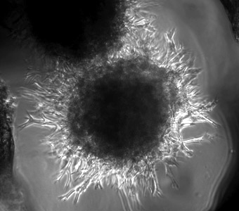
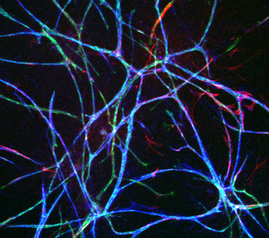
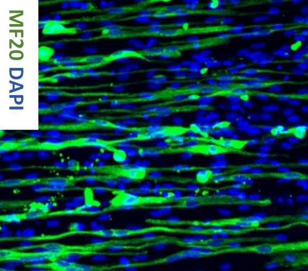
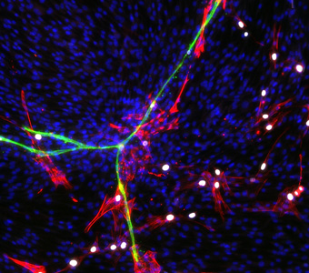
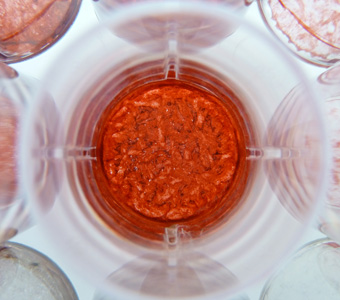
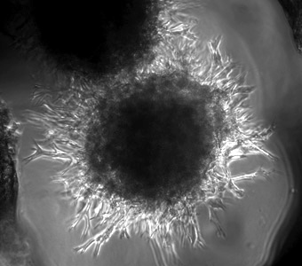
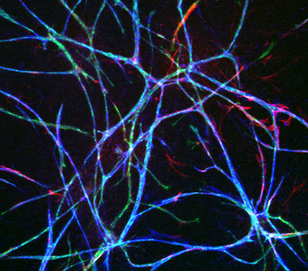
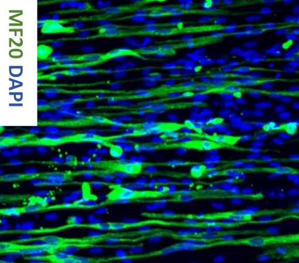
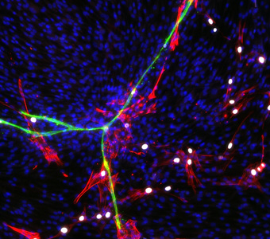
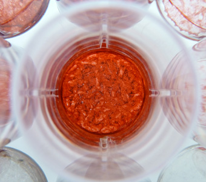
Bioreactor Technology
3D culture techniques endow us with the ability to engineer large, functional grafts for application in tissue repair and regeneration. Strategies for developing these tissue constructs rely on growing stem cells within biomaterial scaffolds in finely regulated microenvironments. Bioreactors enable precise control and monitoring of key biophysical regulatory factors ranging from oxygen tension to mechanical and electrical stimuli. We are developing bioreactor technologies with multi-parametric control to guide multi-lineage differentiation and spatially organized assembly of cells into functional tissue grafts.
Tissue engineering bioreactors: Skeletal muscle is a highly mechanically active tissue that exerts forces on the bony skeleton for movement and stabilization. Therefore, we study the impact of mimicking these mechanical strains in vitro on the contractility our engineered skeletal muscle tissue grafts. With our custom-designed strain bioreactors, we apply strains and electrical stimuli of varying amplitudes, frequencies, and durations to drive maturation and enhanced functionality of 3D skeletal muscle grafts.
Transplant bioreactors: Vascularized composite allotransplantation has increasingly become a viable clinical treatment option for the treatment of complex craniofacial and limb defects. However its potential is still limited by short preservation time. The ischemic injury occurred during clinical standard preservation leads to reperfusion injury and consequently exacerbates post-transplantation outcome. We work on mimicking normal physiological conditions after graft procurement to mitigate ischemia-reperfusion injuries.
 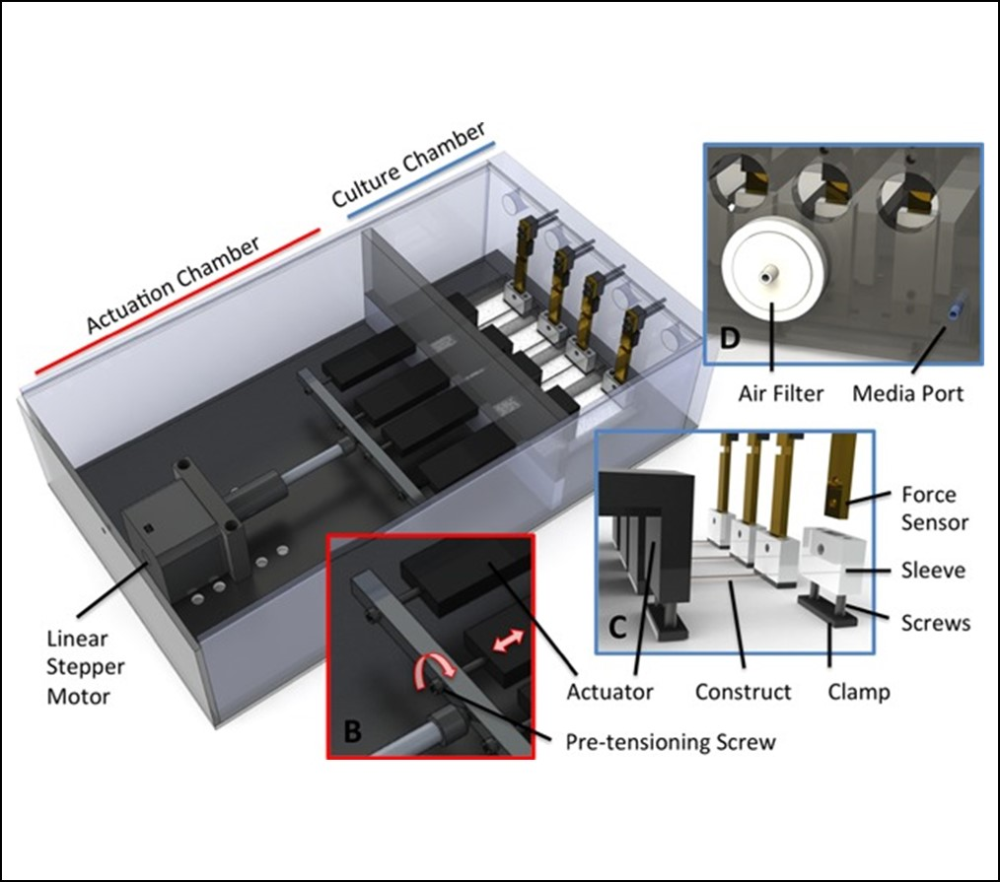
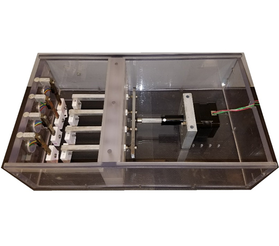
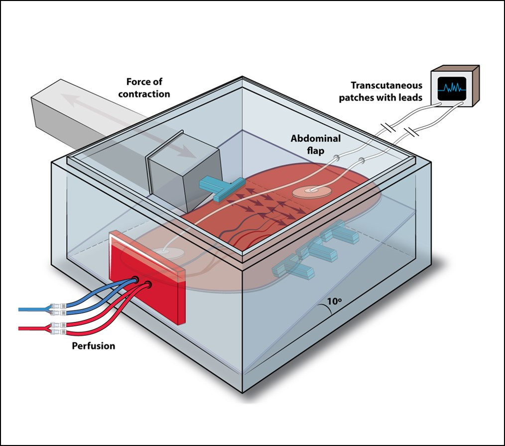
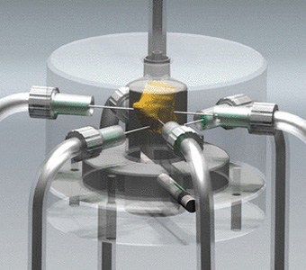
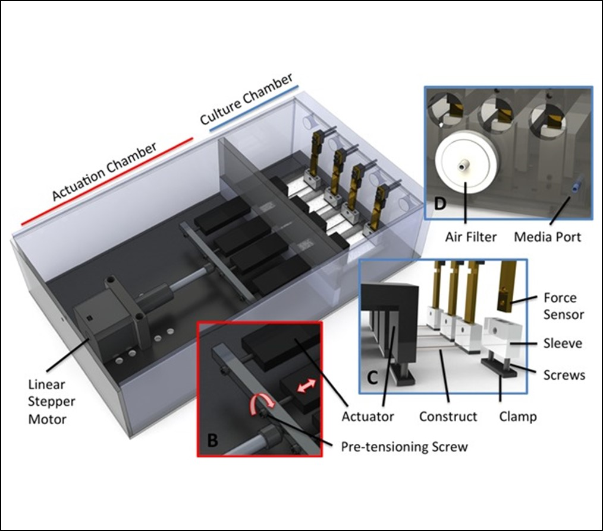
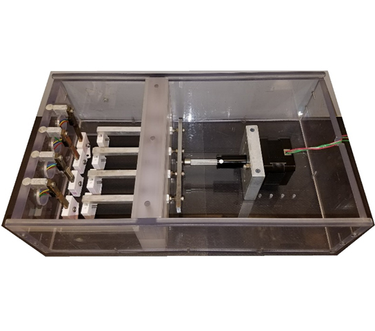
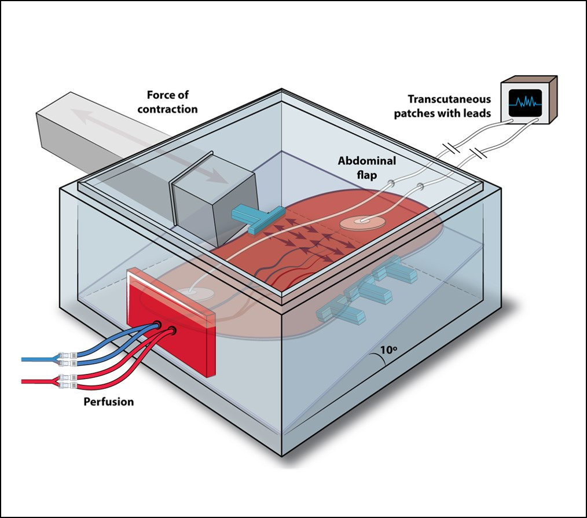
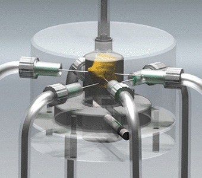
Bone Regeneration
Regenerative medicine approaches have the potential to revolutionize treatment methods for bone defects due to congenital abnormalities, trauma or cancer. The demands for each of these applications will vary in urgency, complexity of shape, and mechanical properties. Using imaging modalities in combination with subtractive and/or additive manufacturing technologies, we have developed methods to engineer anatomically shaped grafts that are customized to a patient’s needs. These structural considerations are combined with the development of novel biomaterials to regulate the biological and mechanical microenvironment. Ongoing studies focus on optimizing the integration of grafts with native tissues as well as addressing regulatory concerns in order to make biological orthopaedic prostheses a therapeutic reality.
3D-printing technologies: We have used both custom-built and commercially available 3D printers to engineer large, anatomically-shaped, biodegradable scaffolds for use in craniofacial bone regeneration. In ongoing studies, we are modifying the scaffold compositions to enhance their functionality and responsiveness to the regenerating bone tissues.
Oxygen delivery: The availability of oxygen can dictate the ability of stem cells to survive, proliferate, and differentiate. As such, our lab is developing methods to investigate how oxygen tensions affects stem cell function and developing tunable methods of oxygen delivery to improve bone regeneration in vivo.
Pre-clinical models: Our team has developed several pre-clinical models for assessing bone regeneration in vivo. These include sub-cutaneous models to evaluate bone formation and intramuscular defects to investigate vascular infiltration into scaffolds. We extensively utilize critical-sized calvarial defects in mice as a model of non-healing bone and utilize scaffolds encapsulating stem cells to study the biology of regeneration. In our on-going studies, we are investigating scale-up to defects of clinically-relevant sizes in larger animal models.
Vascular imaging: We are developing and implementing novel imaging platforms to investigate the correlation between vascularization and bone formation within engineered grafts following implantation into critical-sized murine calvarial defects. We are working closely with collaborators using live animal multi-modal optical imaging to evaluate blood flow and vessel maturity. Additionally, we are developing novel quantitative workflows to characterize the 3D vessel phenotype and spatial relationships between blood vessels and osteoprogenitors.
Skeletal Muscle Regeneration
Roughly 40% of all traumatic injuries involve skeletal muscle damage. When volumetric muscle loss occurs - i.e. more than 20% of the skeletal muscle tissue volume is lost – spontaneous regeneration fails. We use electrospinning technology to develop biomimetic scaffolds that mimic the structure and mechanics of native muscles. These biodegradable materials may be used to guide cellular assembly and implant the engineered tissues into pre-clinical models of muscle loss.
Scaffold development: We fabricate scaffolds with tunable properties that closely mimic the complex architecture and mechanics of native skeletal muscle. We combine these with various cell types including hiPSCs, ASCs, myoblasts, satellite cells, fibroblasts, endothelial cells to engineer vascularized skeletal muscles. The grafts are used to study in vitro myogenesis and in vivo muscle regeneration.
Computational modeling: We combine theoretical models with in vitro experimentation to further understand the complex nature of myogenesis. Our collaborative works have explored how the mechanical characteristics of the scaffolds could be described using a model of poroelasticity. We are interested in using mathematical models to predict how the mechanical properties of the scaffolds guide the expression of myogenic regulatory factors and tissue formation.
Pre-clinical models: Our team has developed several pre-clinical models for assessing muscle regeneration following volumetric muscle loss (VML). These include partial resection of the mouse tibialis anterior muscle to study muscle regeneration along with host vascular, neural, and cellular infiltration. We have also studied more extreme muscle damage, where complete muscles are removed from the mouse hindlimb before scaffold implantation. On-going studies are investigating scale-up to larger defects of clinically relevant sizes.
 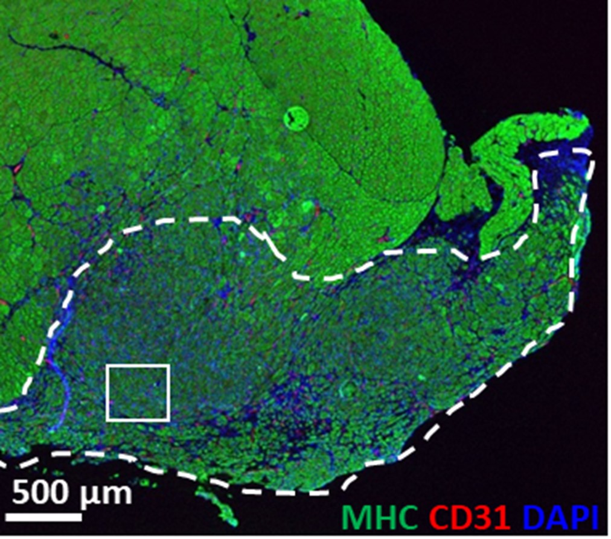
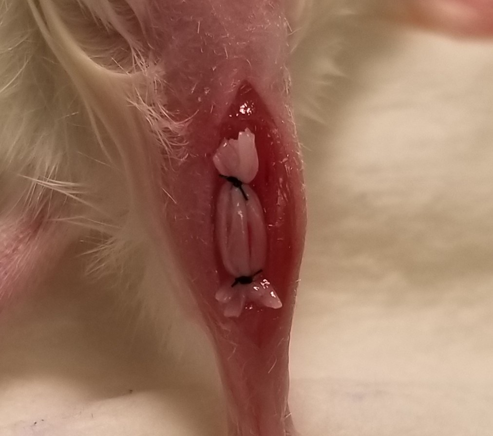
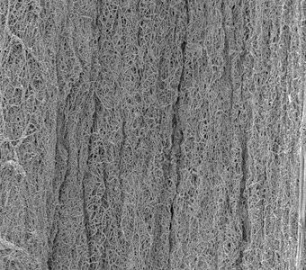
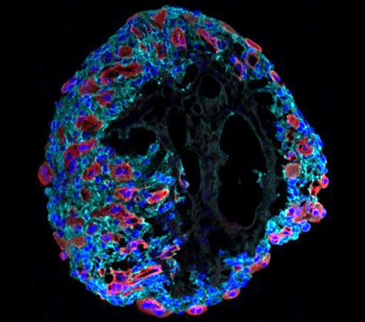
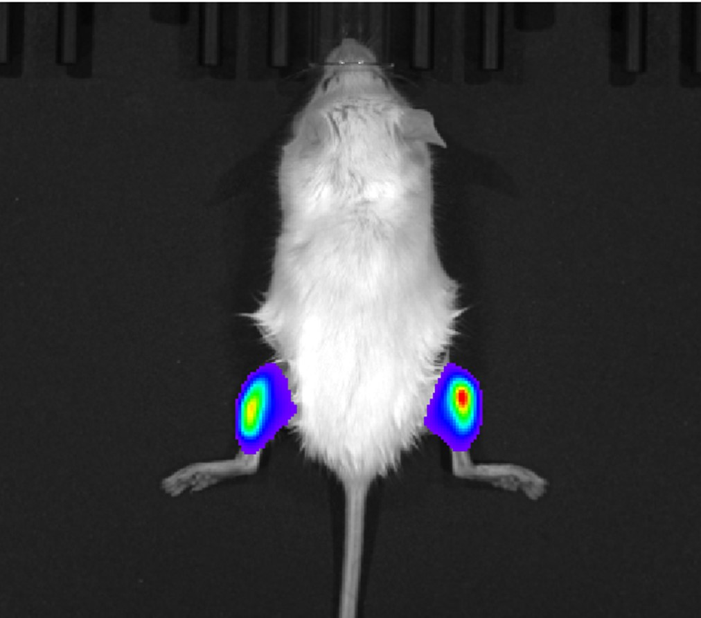
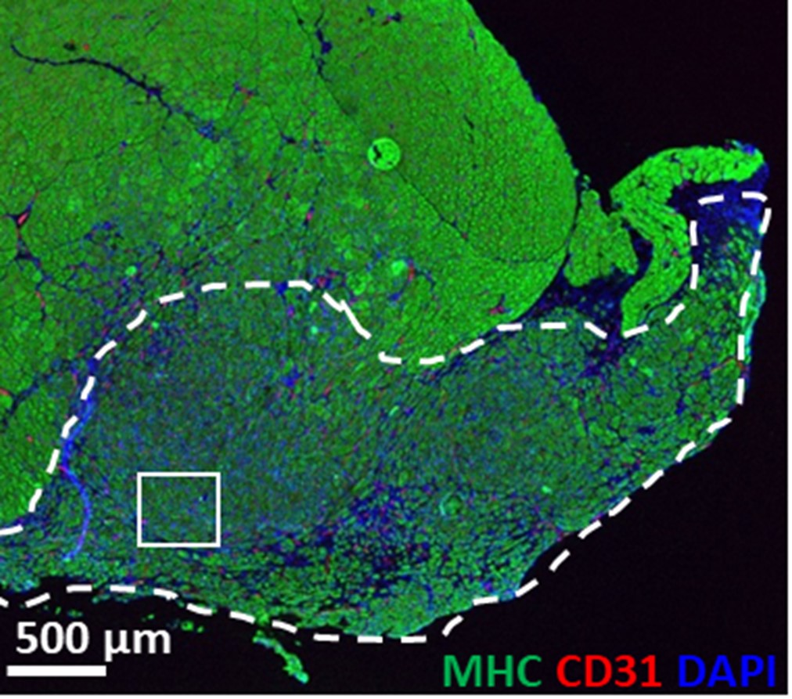
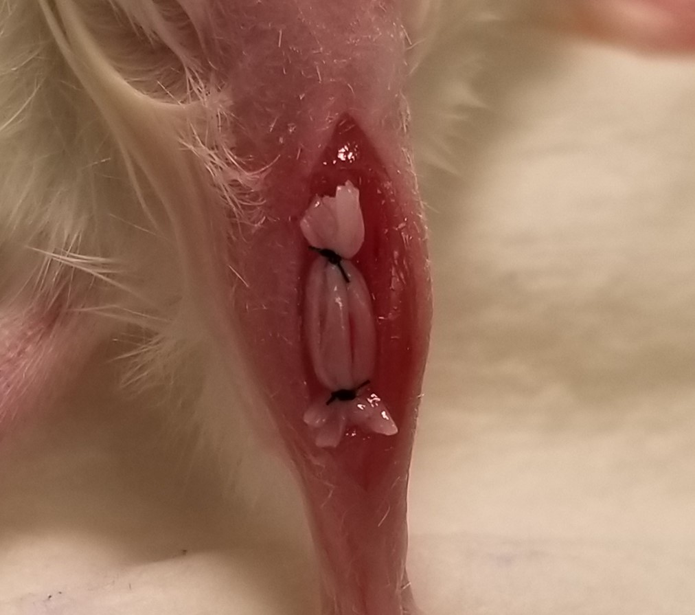
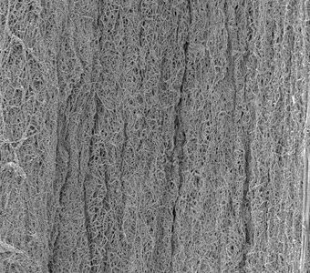
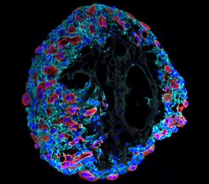
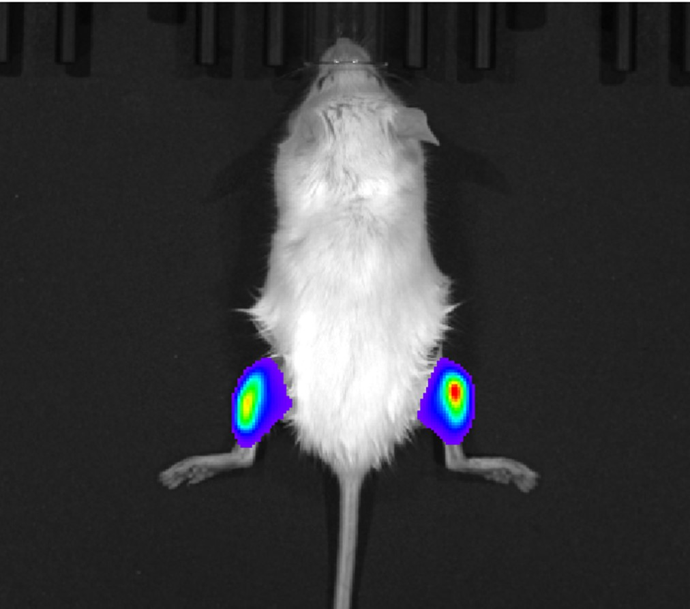